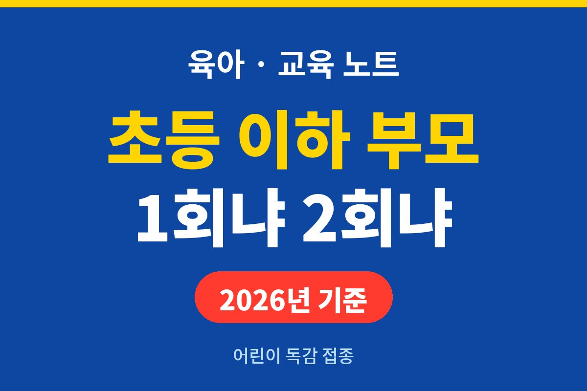
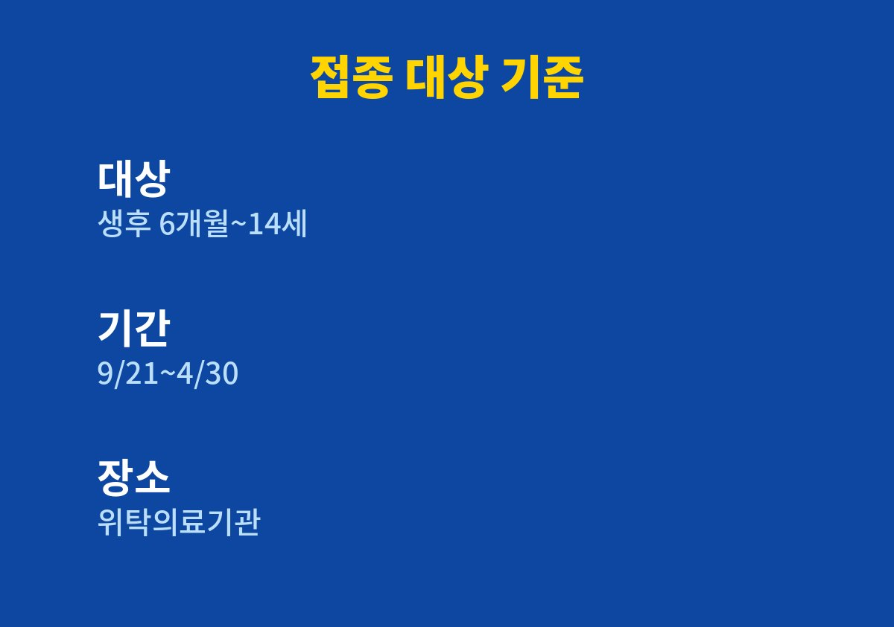
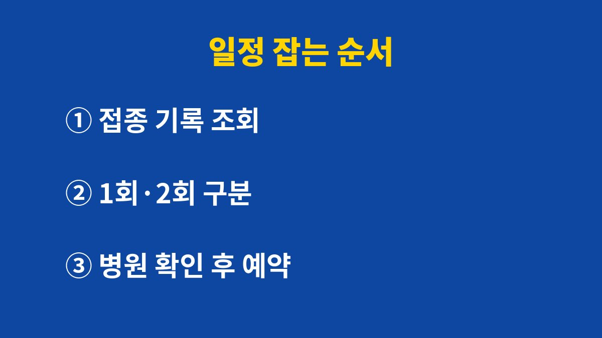

어린이 독감 예방접종은 생후 6개월부터 14세까지가 무료 접종 대상이고, 2026년 9월 21일부터 2027년 4월 30일까지 맞을 수 있다.
횟수는 나이보다 접종 이력에 따라 갈린다. 만 9세 미만이면서 독감 백신을 처음 맞거나 이전 기록을 모르는 아이는 2회 접종 대상이다.
질병관리청 예방접종도우미는 2026-2027절기 어린이 대상을 생후 6개월~14세, 즉 2012년 1월 1일부터 2026년 8월 31일 사이 출생아로 안내한다.
형제가 있는 집이라면 막내와 큰아이의 접종 방식이 다를 수 있다.
큰아이는 해마다 1회로 끝나는 경우가 많고, 어린 동생은 올해가 처음이라 2회가 필요할 수 있다.
기준이 나이가 아니라 이력이라는 점이 헷갈리는 부분이다.
올해 만 8세가 되는 아이라도 독감 백신을 맞은 적이 없으면 2회 대상이고, 9세 이상이면 이력과 관계없이 1회 대상으로 본다.
출생일 기준도 따로 있다. 2026년 8월 31일 이후에 태어난 아기는 아직 생후 6개월이 되지 않아 이번 절기 어린이 대상에 들어가지 않는다.
2011년 이전에 태어난 아이도 어린이 대상 범위 밖이므로 다른 연령 안내를 확인해야 한다.
| 구분 | 접종 횟수 | 확인할 기준 |
|---|---|---|
| 생후 6개월~9세 미만, 처음 접종 | 2회 | 독감 백신을 맞은 적이 없음 |
| 생후 6개월~9세 미만, 이력을 모름 | 2회 | 기록이 확인되지 않음 |
| 2026년 6월 30일까지 총 1회만 접종 | 2회 | 지난 접종 기록 1건 |
| 그 밖의 대상 어린이 | 1회 | 예진의사 상담 후 결정 |

접종은 2026년 9월 21일(월)에 시작했고 2027년 4월 30일에 끝난다.
기간이 길어서 미루기 쉽지만, 2회 접종 대상은 두 번을 모두 마쳐야 하므로 첫 접종을 늦게 잡으면 일정이 빠듯해진다.
무료 접종은 주소지와 관계없이 전국 위탁의료기관과 보건소, 보건지소, 보건진료소에서 받는다.
다니던 소아청소년과가 위탁의료기관인지는 방문 전에 전화로 묻는 편이 빠르다.
공식 안내에는 접종 전에 접종 가능 여부를 확인하라는 문구가 있다.
같은 동네라도 병원마다 접종 가능한 날과 시간이 다를 수 있기 때문이다.
어린 아이를 데리고 가는 날이면 대기 시간이 길수록 아이가 지치므로, 전화로 한산한 시간대를 함께 물어본다.
순서의 첫 단계에서 막히는 경우가 많다.
수첩을 잃어버렸거나 예전에 다른 지역에서 맞았다면 기록이 남아 있는지 직접 보기 어렵다.
그때는 조회 결과와 다니던 병원 기록을 함께 놓고 맞춰 본다.
그래도 모르겠으면 이력을 모르는 경우로 보고 2회 대상인지 병원에서 물어본다.

가장 흔한 일은 작년에 맞았으니 올해도 1회라고 짐작하는 것이다.
지난 접종이 1회뿐이었는데 올해가 그 이력의 연장선이라면 2회 대상일 수 있다.
기록은 짐작 대신 조회로 확인한다.
열이 있거나 컨디션이 평소와 다른 날은 접종 여부를 예진의사가 판단한다.
공식 안내도 접종 일정과 횟수를 예진의사와 상담하라고 적고 있다.
아이가 아픈 날 억지로 일정을 맞출 이유는 없다.
접종을 마친 날은 접종 날짜와 병원 이름을 아이 수첩이나 휴대폰 메모에 남겨 둔다.
내년에 1회인지 2회인지 가를 때 기록이 가장 빠른 근거가 된다.
병원을 옮겨도 이어서 확인할 수 있어서, 기록 한 줄이 두 번째 방문을 쉽게 만든다.
한 번에 한 아이씩 데려가면 접종 후 지켜볼 시간이 여유롭다.
형제를 같은 날 맞히는 편이 편한 집도 있으니, 각 아이의 횟수가 다른지만 먼저 확인한다.
이번 주에는 아이 수첩이나 조회 화면에서 지난 독감 접종 횟수부터 확인한다.
기록이 헷갈리면 질병관리청 콜센터 1339나 가까운 보건소에 물어보면 된다.
참고 자료: 질병관리청 예방접종도우미 「인플루엔자 국가예방접종사업」(2026년 11월 확인)
※ 2026년 기준 공식 자료를 바탕으로 정리한 일반 정보이며, 아이의 발달이나 건강에 걱정이 있다면 소아청소년과 등 전문가와 상담하길 바란다.